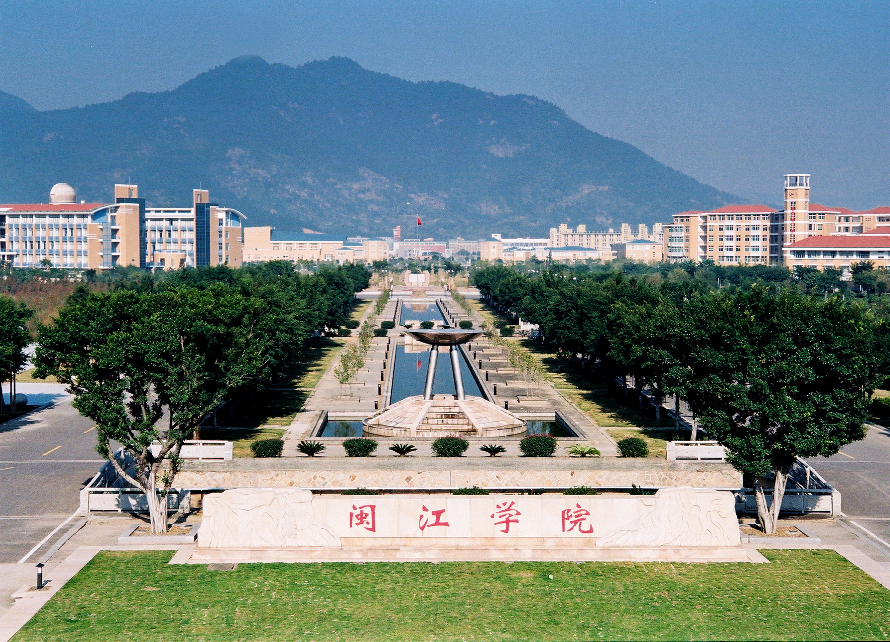

基本信息
-
中文名
-
闽江学院
-
外文名
-
Minjiang University
-
简称
-
闽院（MJU）
-
现任领导
-
党委书记：何代钦 , 校长：王宗华
-
本科专业
-
61个
- 硕士点
- 专业学位授权类别1个
- 院系设置
- 15个二级学院
- 校 训
- 崇尚完美，追求卓越
- 校 歌
- 《闽江学子之歌》
- 地 址
- 校本部：福建省福州市大学城溪源宫路200号
工业路校区：福州市工业路333号
首山校区：福州市仓山区首山路260号
洪塘校区：福州市仓山区洪塘路
- 院校代码
- 10395
历史沿革
前身溯源
-
福州师范高等专科学校
-
1958年，创办，校址福州国货路。
-
1960年，改称福州师范学院。
-
1961年，撤并入南平师范专科学校。
- 1978年5月，复办，称福州师范大专班，分散在市内几所学校办学。
- 1979年春，定址六一路王庄。
- 1981年7月，改称福州师范专科学校。
- 1987年，迁长乐路光明港。
-
闽江职业大学
- 1984年7月，经福建省人民政府批准创办，原设仓山、鼓楼分校。
- 1985年11月，两分校合并。
-
1986年7月，福州新闻职业专科学校并入。
-
1988年8月至1991年7月，曾在马尾设立马江分校
-
合并发展
-
2002年3月21日，教育部发函同意在福州师范高等专科学校与闽江职业大学合并基础上建立闽江学院，并确认由福建省领导和管理，实行省、市（福州市）共建，以市为主的办学体制。
-
2010年1月12日，创办“新华都商学院”。
-
2011年10月，学校入选“服务国家特殊需求”专业硕士学位研究生教育试点高校。
- 2017年6月，学校成为福建省“首批深化创新创业教育改革示范高校”；[14] 同年8月，学校正式进入福建省重点建设高校行列。
- 2018年1月，学校新增为“福建省2018-2020年硕士学位授予培育单位立项建设名单”；同年3月，入选福建省一流学科建设高校。
- 2019年12月，学校入选“双万计划”。
办学条件
院系专业 截至2019年9月，学校设有15个二级学院，开设本科专业61个。
师资力量
截至2019年12月，学校有校专任教师1028人、外聘教师106人。其中，有“双师型”教师288人，占专任教师的比例为28.02%；具有高级职称的专任教师484人，占专任教师的比例为47.08%；具有研究生学位（硕士和博士）的专任教师908人，占专任教师的比例为88.33%。 [32] 截至2019年9月，学校有国家级、省部级人才86人（含柔聘），其中国家“千人计划”、国家有突出贡献中青年专家、“百千万人才工程”国家级人选、中科院“百人计划”、教育部新世纪优秀人才等国家级人才14人。有省级教学团队7个。
地理位置